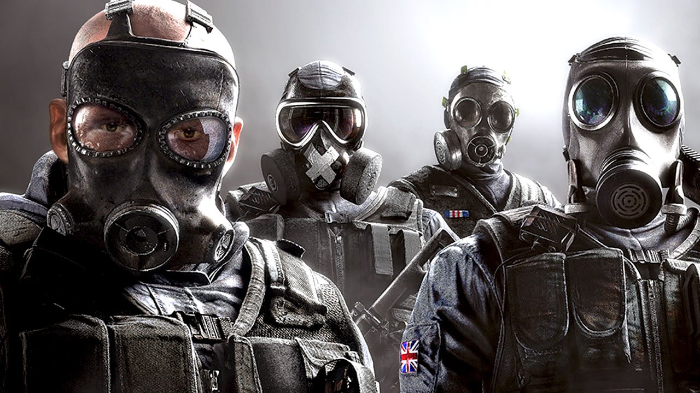

Putting amazing graphics, easy and fun gameplay, and multiplayer options into one game at once isn't easy, but Ubisoft managed to do just that. Welcome to Tom Clancy's Rainbow Six Siege. An online firt person shooter where you can choose from 48 different opperators (characters) to play as.
Rainbow Six Siege is a successor to Rainbow Six Patriots. One of the biggest differences in these games is that Patriots is very narrative-based, wheras Siege is more "do it yourself". However, Patriots was eventually cancelled due to its technical shortcomings, and the team decideed to reboot the franchise. Rainbow was anounced at the Electronic Entertainment Expo in 2014. The game was scheduled to be released on October 10 2015, but Ubisoft delayed the date to December 1st so that they could give the team more time to balance the game for cooperative multiplayer play.
Rainbow Six Siege is directed by Xavier Marquis, produced by Sebastien Labbe, and designed by Daniel Drapeau. It is available to play on PC, Play Station 4, and Xbox One.